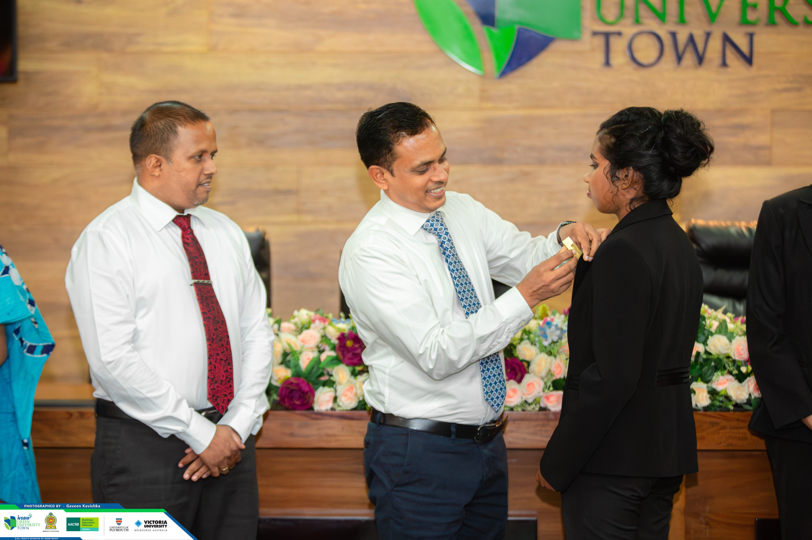
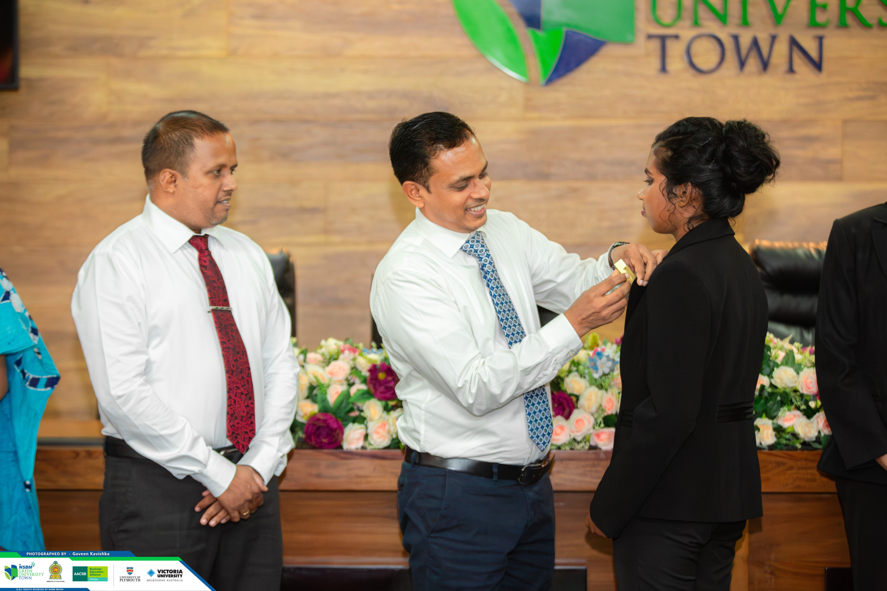

>Vice Treasurer at Association of Computer and Data Science at NSBM Green University 2024-2025

 

As Vice Treasurer of one of the most active student-led associations at NSBM Green University, I have played a pivotal role in the planning, execution, and financial management of numerous student-centered initiatives. My responsibilities combine strategic budgeting, event coordination, and student engagement, all aimed at building a strong, connected tech community.
🧾 Key Contributions:
💰 Fundraising Projects:
- Organized and managed funding drives that raised over LKR [add amount if known] for tech and non-tech events
- Built partnerships with sponsors and industry professionals to support events and student development programs.
- Implemented transparent budgeting methods, ensuring accurate tracking of all association funds.
- Co-organized hands-on coding workshops, web development bootcamps, and Data visualization seminars.
- Managed logistics, registrations, and speaker coordination for sessions attended by 100+ students.
- Ensured every event stayed within budget while maintaining high quality and value.